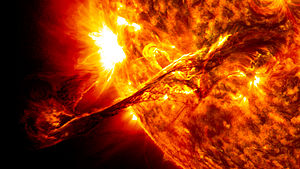
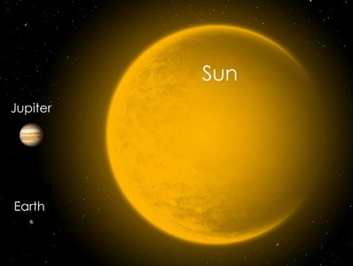
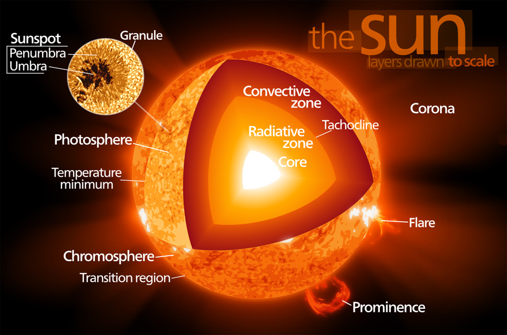
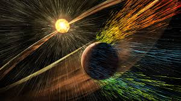
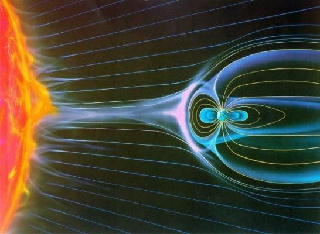
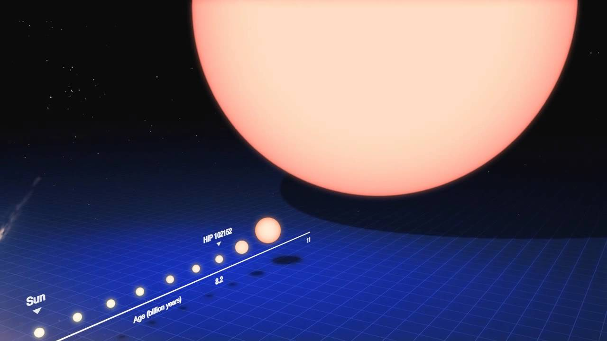

The Sun

The sun is the only star in the solar system and the one we all orbit. It is a yellow dwarf star, a hot and glowing ball of hydrogen. Located in the middle of the solar system, its gravity holds the everything together.
Did you know?
The sun is almost a perfect sphere. Although it is so large, its radius only varies by about 10km, making it rounder than a marble.
How big is the sun?
The sun is huge. Having a radius of over 695,000 kilometers, it is over 100 times as large as earth. It contains over 1000 times more mass than the entire rest of the solar system, and if it was hollow, you could fit over a million piles of earth inside.
Although it is so big, it is only average among all the other stars in the milky way, as a type G2V star. In fact, some stars are so big that when compared side by side, our sun wouldn’t even be visible.
Inside the sun
The sun is made up of 75% hydrogen and 24% helium, along with a tiny bit of other elements such as oxygen, carbon, and iron. Because it is so hot, it is neither, solid, liquid, or gas. Instead, it is made of a different state of matter called plasma.
Although the sun is made up of a couple elements, it isn’t just a big fiery ball. In fact, it has many different layers, just like our earth.
Core
From the center of the sun to around a fourth of the radius is the core. Here the temperature is a hellish 15 million degrees. The density is enormous too – just 1 cubic centimeter weighs 150 grams. In comparison, the same amount of water would weigh 1 gram, and even the heaviest element, osmium, would only weigh 22 grams.
The pressure and heat here are enough some of the hydrogen atoms to get pushed together to form helium, causing nuclear fusion. This generates a ton of energy and is what causes the sun to be so hot and bright.
Radiative zone
The surrounding the core is the radiative zone. This area extends to around 70% of the sun’s radius. The temperature goes from 7 to 2 million degrees and the density drops to less than 0.2 g/cm3. The energy from the core travels by radiation, which is absorbed and re-emitted over and over. It can take 170000 years for energy in the core to travel through the radiative zone.
Convective zone
From the edge of the radiative zone to near the surface is the convective zone. Here the energy is transmitted through convection, and the hotter plasma at the bottom flows to the surface, where it cools and flows back down to get heated again.
Photosphere
The surface layer of the sun is the photosphere. This layer is only 500 km thick, and the temperature is around 5000 C. Unlike the lower layers, the photosphere is mostly transparent, so light can pass through and escape into space.
Chromosphere and Corona
Above the surface is the chromosphere, which extends for a few thousand km, and above that is the corona. The density is very low, and there is less and less gas the further away you go. In this area, you can find the sunspots, coronal loops, and other structures protruding from the surface.
As you leave the surface, the temperature drops a little, before greatly increasing. Although we do not know exactly why, some parts of the corona can be over 2 million C!
Magnetosphere
The sun has a magnetic field. It varies in strength throughout different parts of the sun, and this is what causes sunspots, as well as huge loops of plasma called prominences. The magnetic field doesn’t stop near the sun. instead, it is carried by solar wind, a stream of charged particles emitted by the sun, all the way through the heliosphere.
Every 11 years, the magnetic field goes through a cycle of activity. During the solar maximum, solar activity, such as sunspots, solar prominences, solar flares, and coronal mass ejections become much more common. Along with increased solar wind, the charged gas emitted by these can reach earth, where they cause auroras and may damage satellites, or disrupt radio signals and electricity. Luckily, the Earth's own magnetic field protects us from most of the damage. Without it, the sun would strip away our atmosphere and make Earth uninhabitable.
 The past and future
The sun formed 4.5 billion years ago along with the rest of the solar system, from a giant cloud of gas and dust. It is currently in its main sequence stage. As it gets older, it is slowly getting brighter. In around 1-2 billion years, the sun will become too bright for the earth to sustain life, as it heats the earth so much that the oceans start boiling. In around 5 billion years, the sun will run out of hydrogen in its core, and start turning into a red giant. As it does, it will expand over a thousand times and become big enough to engulf Mercury, Venus, and Earth. Eventually, the sun will expand enough for the outer layers to be blown away, forming a planetary nebula. Only the core remains, which is now a super dense ball of helium and carbon called a white dwarf. With no more hydrogen to fuse, the white dwarf will eventually cool down, but doing so would take over a trillion years.
How does the sun affect Earth?
The sun affects the earth in many ways, mainly through light energy. Even from millions of kilometers away, sunlight is still very strong. It is bright enough to damage your eyes, so don’t look directly into the sun, though.
When sunlight hits it warms the earth up. This causes wind, rain, and affects the weather and climate, as well as keeping the earth from freezing. It also provides us with almost all of our sources for electricity and power. The sunlight also lets us, and other animals see. Without the sun, there would be no life on earth.
Over history, many people have looked at the sun in awe and tried to understand what to them was a random glowing ball. Countless legends, myths, and religions around the world include the sun in their stories. Even today, mentions of the sun can be found in many books, movies, songs, and other media.